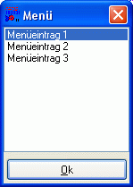
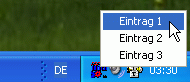

Menüs und Auswahlmöglichkeiten
Bisher haben Sie bereits einige Möglichkeiten kennengelernt, um Daten vom Benutzer einzulesen. Diese Daten sind jedoch völlig frei vom Benutzer definierbar. Um aber dem Benutzer die Auswahl eines Wertes aus einer bestimmten Anzahl von Werten zu ermöglichen, stellt RapidBATCH auch zwei leistungsstarke Dialoge zur Verfügung.
Die LISTBOX findet hierbei am häufigsten Verwendung. LISTBOX ist ein Dialog mit einer Listenauswahlmöglichkeit, die sehr vielseitig eingesetzt werden kann: Ob als Programm-Menü, Dateiauswahl oder für andere Zwecke - Das Anwendungsspektrum für den LISTBOX-Dialog ist äusserst breit und vielseitig gehalten.
Der LISTBOX-Dialog bietet eine vielseitige und schnell realisierte Auswahlmöglichkeit
LISTBOX benötigt zur Anwendung zwei Parameter. Einmal einen Dialog-Titel und eine so genannte Liste. Solch eine Liste ist ein String, dessen einzelne "Elemente", die später in der LISTBOX angezeigt werden, standardmäflig durch Pipe-Zeichen (|) getrennt sind (dieses Listentrennzeichen lässt sich global über die Variable [std_sep] auch ändern). Ein Array lässt sich als Liste nicht direkt übergeben, kann aber mit Hilfe der Funktion "arrayToList" aus der ARRAY.RB-Funktionsbibliothek schnell und einfach in eine Item-Liste für den LISTBOX-Dialog umgewandelt werden.
Rückgabewert der LISTBOX-Funktion ist der ausgewählte Wert aus der Liste. Ist dieser Wert leer, so wurde entweder kein Menüeintrag ausgewählt oder der Schlieflen-Button der LISTBOX betätigt.
Ein einfaches Beispiel für eine LISTBOX ist folgendes Script mit einer kleinen Auswahl:
rem Einfache Auswahl mit einer LISTBOX:
listbox [auswahl] = 'Menü', 'Menüeintrag 1|Menüeintrag 2|Menüeintrag 3'
if [auswahl] = ''
echo 'Kein Element ausgewählt!'
else
echo 'Gewähltes Element ist ' # [auswahl]
endif
end
Die LISTBOX ist ebenfalls sehr anpassungsfähig. Äquivalent zu den bisher vorgestellten Dialogen lässt sich auch die LISTBOX mit Hilfe der Variablen [ListBox_Width] und [ListBox_Height] in der Gröfle verändern; [ListBox_X] und [ListBox_Y] ermöglichen die individuelle Positionierung des Dialoges (Defaultwert ist auch hier '0' zur automatischen Zentrierung). Mit [ListBox_Ok] lässt sich auch der Text auf dem OK-Button der LISTBOX verändern.
Um die Auswahl von mehr als einem Eintrag aus einer LISTBOX zu ermöglichen, bietet RapidBATCH ausserdem die Variable [ListBox_MultiSel]. Diese ist standardmäflig auf den Wert '-1' gesetzt, was soviel bedeutet wie "Keine Mehrfachauswahl". Setzt man den Wert auf '0', lassen sich in der LISTBOX mehr als ein Eintrag auswählen, wenn nötig auch alle. In diesem Fall wird ebenfalls (im Fall von mehreren selektierten Einträgen) eine Liste von durch Pipe-Zeichen (bzw. das durch die Variable [std_sep] definierte Zeichen) von einander getrennten Werten zurückgeliefert.
Folgendes Beispiel demonstriert die Verwendung der o.g. Variablen. Beobachten Sie bitte auch den Rückgabewert von LISTBOX bei einer Mehrfach-Auswahl.
rem Dateiliste generieren (Dateinamen werden von FINDFILES als Liste zurückgegeben
findfiles [dateiliste] = 'C:\WINDOWS\*.*', '1'
rem Dateiauswahl ermöglichen mit LISTBOX
[ListBox_Width] = '300'
[ListBox_Height] = '500'
[ListBox_MultiSel] = '0'
[ListBox_Ok] = 'Auswählen!'
listbox [auswahl] = 'Bitte Datei wählen:', [dateiliste]
if [auswahl] = ''
echo 'Kein Element ausgewählt!'
else
echo 'Gewählte Datei(en): ' # [auswahl]
endif
end
Neben der LISTBOX bietet RapidBATCH seit der Version 5.0 nun auch eine neue, professionelle Menü-Auswahlmöglichkeit: Den TRAYMENU-Dialog! TRAYMENU ermöglicht das Anzeigen eines so genannten Traybar-Menüs in der Windows-Taskleiste. Der "Dialog" selbst wird durch ein kleines Icon repräsentiert, wobei man das Menü mit einem Rechtsklick auf das Icon anzeigen kann. Mit dieser Möglichkeit kann man beispielsweise ein Script entwickeln, welches permanent im Hintergrund läuft, aber mittels Auswahl von Programmfunktionen oder durch Klicken des Icons eine Aktion auslösen kann.

Einfache aber effektive Auswahl- und Menüprogrammierung mit dem TRAYMENU-Menüdialog
Im Grunde genommen wird TRAYMENU genauso verwendet wie die LISTBOX. Man übergibt einen Titel (der als Tooltip angezeigt wird, wenn der Benutzer mit der Maus über das Icon fährt) und eine Liste an Menü-Einträgen, getrennt durch Pipe-Zeichen (diese kann auch leer sein, dann wird gar kein Menü erzeugt). Klickt der Benutzer nun auf das Icon des Tray-Menüs, so liefert die Funktion einen Leerstring zurück; Andernfalls, wenn der Benutzer einen Eintrag aus dem Menü auswählt, wird der entsprechende Menü-String zurückgeliefert.
traymenu [eintrag] = 'Bitte wählen Sie einen Eintrag aus...', 'Eintrag 1|Eintrag 2|Eintrag 3'
if [eintrag] ! ''
echo 'Der gewählte Menüpunkt lautet: ' # [eintrag]
else
echo 'Das Icon wurde angeklickt.'
endif
end
Um ein Menü professionell mit Shortcuts auszustatten, kann man auch einen Buchstaben jedes Eintrags mit einem &-Zeichen versehen. Dies weist RapidBATCH an, den nachfolgenden Buchstaben zu unterstreichen, so dass dieser als Shortcut fungiert (wenn das Menü nun offen ist lässt sich mit diesem Shortcut ein Eintrag durch Tastatureingabe auswählen). Beispiel:
traymenu [eintrag] = 'Bitte wählen Sie einen Eintrag aus...', 'Eintrag &1|Eintrag &2|Eintrag &3'
Jetzt kann man die einzelnen Einträge mit 1, 2 oder 3 auch über die Tastatur auswählen. Um ein &-Zeichen im Menü auszugeben schreibt man einfach stattdessen "&&", z.B.
traymenu [test] = 'Ein Test', 'Hello && World'
Übrigens: das &-Zeichen wird, wenn ein Eintrag ausgewählt wurde, wieder mit übergeben, daher bitte auch in Bedingungen auf den Returnwert von TRAYMENU abprüfen!
Um eine Trennlinie in das Menü einzubauen (z.B. um viele Menüeinträge in kleine Gruppen zu trennen), schreibt man einfach einen einzelnen Bindestrich als Menüeintrag. Beispiel:
traymenu [eintrag] = 'Bitte wählen Sie einen Eintrag aus...', 'Eintrag &1|Eintrag &2|Eintrag &3|-|B&eenden'
TRAYMENU verwendet als Icon immer das Standard-Icon der Applikation. Bei interpretierten Scripts ist dies immer das Icon des RapidBATCH-Interpreters, bei compilierten Scripts das entsprechend hinzugelinkte Programmicon.
Mit Hilfe der vordeklarierten Variablen [app_icon] lässt sich allerdings auch eine externe ICO-Datei als Icon benutzen. [app_icon] setzt dabei ein Icon, das für alle Fenster der Anwendung gilt, d.h. es lässt sich hierüber auch das Icon, welches bei LISTBOX, INFOBOX, EDITBOX und INPUTBOX links oben erscheint, mit ändern. Wird [app_icon] auf einen Leerstring gesetzt, wird automatisch das Standard-Icon der Anwendung wieder benutzt.
Beispiel:
rem TRAYMENU unter Verwendung eines individuellen Programm-Icons
[app_icon] = '..\icons\orca1.ico'
traymenu [eintrag] = 'Bitte wählen Sie einen Eintrag aus...', 'Eintrag &1|Eintrag &2|Eintrag &3|-|B&eenden'
if [eintrag] ! ''
echo 'Der gewählte Menüpunkt lautet: ' # [eintrag]
else
echo 'Das Icon wurde angeklickt.'
endif
end
Copyright © 2000-2006 by J.M.K S.F. Software Technologies, Jan Max Meyer
All rights reserved.